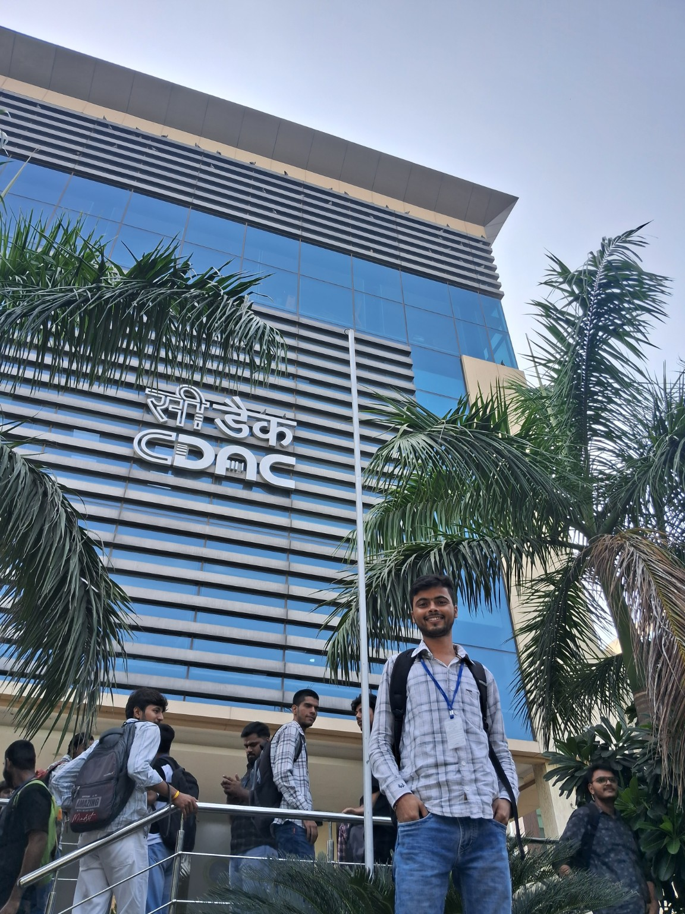

☕01
Java Development
Core Java, object-oriented programming, collections, exception handling, and readable code.
OPEN TO SOFTWARE ENGINEERING OPPORTUNITIES
JAVA FULL STACK · BACKEND ENGINEERING
Hi, I’m Aaryan Goswami — a B.Tech CSE graduate focused on Java full-stack development, backend engineering, clean APIs, and solving problems one thoughtful line of code at a time.
class Developer {
String focus =
"build & learn";
}I’m interested in how reliable software is designed behind the scenes — from data models and API contracts to validation, error handling, and maintainable code.
My current learning path is centered on Java backend engineering while strengthening data structures and algorithms. I enjoy turning concepts into working projects, investigating bugs, and understanding why a solution works rather than just making it work.
A growing toolkit for backend-focused software development.
Core Java, object-oriented programming, collections, exception handling, and readable code.
Learning to design REST endpoints, structure services, validate requests, and handle errors consistently.
Relational data, SQL queries, and connecting Java applications to databases.
Practicing algorithmic thinking, edge cases, and complexity through coding problems.
Building interfaces with semantic HTML, responsive CSS, and JavaScript interactions.
Version control and the habits that make code easier to maintain and collaborate on.
↗ Skills reflect my current working knowledge and learning areas; I keep expanding them through hands-on practice.
Backend implementation, Java web development, and consistent algorithm practice.
POST /api/v1/projects/{projectId}/flags
DELETE /api/v1/flags/{flagId}
● REST API · JAVAWorked on an API assignment involving feature flags: adding an optional description field, implementing deletion behavior, and returning appropriate HTTP status codes for successful and missing-resource cases.
View repository ↗$ git status
Practicing. Debugging. Repeating.$ java Main
Process finished with exit code 0Building consistency with Java-based problem solving on Codeforces and LeetCode, focusing on arrays, binary search, sliding windows, edge cases, and time complexity.
View practice repository ↗$ fetch accepted submissions
Java · Servlets · MySQL · Tomcat$ generate README
Problems organised for a GitHub profileA Java web application project built around Codeforces problem data. The project uses Java Servlets, MySQL, and Apache Tomcat to work with a problems database and support a README-generation workflow.
Explore my GitHub ↗Project descriptions reflect work and learning shared so far. Add repository-specific links, screenshots, tests, and deployment details as they become available. I value clear documentation, tests, and honest representation of what I’ve built.
INDUSTRIAL VISIT
My industrial visit to C-DAC was an opportunity to step outside the classroom and see a professional technology environment up close. Experiences like this help connect academic learning with the people, systems, and practices behind real-world computing.

I’m aiming to become the kind of engineer teammates can trust: curious, dependable, and thoughtful about trade-offs.
Start with the problem, constraints, and edge cases before choosing an implementation.
Prefer clear API contracts, meaningful errors, and code that communicates its intent.
Document progress, use version control, ask better questions, and turn feedback into improvements.
HAVE AN OPPORTUNITY OR A GOOD PROBLEM?
I’m interested in entry-level software engineering and Java backend opportunities where I can contribute, learn from strong engineers, and grow through real product work.
Email: aaryan.goswami.cse.2024@miet.ac.in